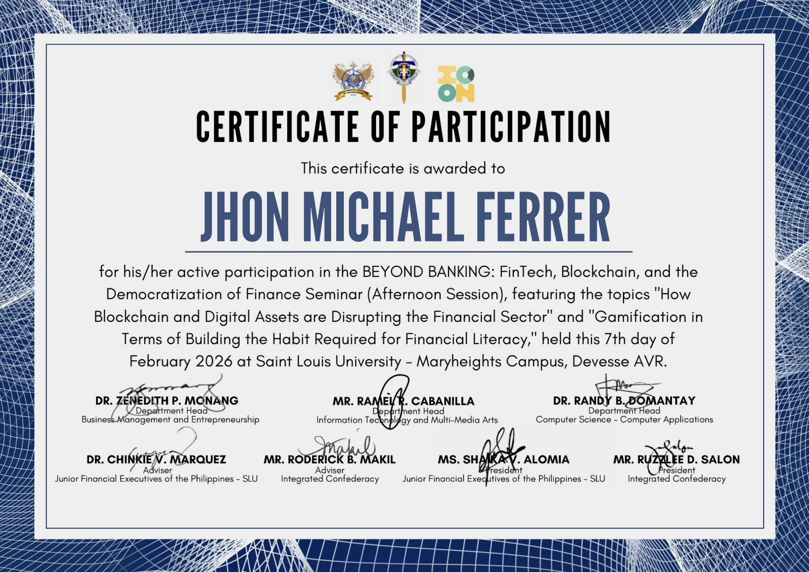
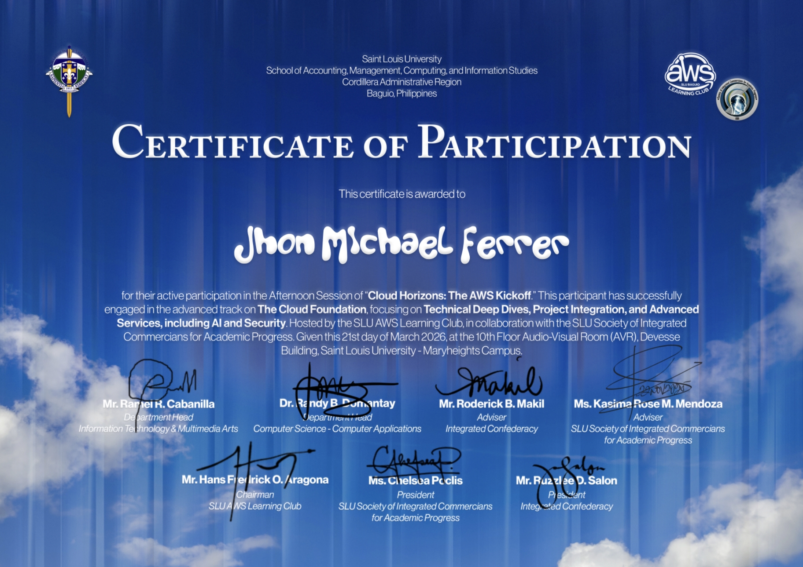

Career Objective
To contribute as a software engineering intern while growing through real projects.
I want to support implementation, testing, UI improvement, and database-backed development in a real team environment.
Career Portfolio
Computer science student seeking an internship where I can build, learn, and contribute to real engineering work.
Career Objective
I want to support implementation, testing, UI improvement, and database-backed development in a real team environment.
Portfolio Highlights
Professional Summary
My experience includes web systems, mobile apps, databases, UI/UX, and software engineering coursework.
Selected Projects
Contribution: Led development work for a group marketplace project and built client-side and server-side features using JavaScript, DOM scripting, and PHP.
Outcome: Delivered a working multi-part web experience that demonstrated leadership, end-to-end implementation, and coordination across the team.
Contribution: Developed a standards-compliant website with thoughtful structure, visual styling, and design preparation in Figma.
Outcome: Produced a polished advocacy website that showed my ability to combine technical implementation with intentional UI/UX decisions.
Contribution: Built a laboratory reservation system using PostgreSQL and ASP.NET with a focus on structured backend and dependable data handling.
Outcome: Demonstrated readiness for real software engineering work involving data models, workflows, and maintainable business logic.
Contribution: Created a distributed application using Java RMI, MVC, and Scene Builder to organize application flow and user interaction.
Outcome: Showed a stronger-than-average internship portfolio breadth by covering distributed communication and architectural structure.
Contribution: Designed a database-backed scheduling solution using SQL Workbench and phpMyAdmin for organized information flow.
Outcome: Strengthened my portfolio with practical database planning and data management skills that support real application reliability.
Contribution: Helped deploy a mobile booking application using Android Studio and Figma with attention to user flow and interface planning.
Outcome: Added mobile product thinking to my portfolio, showing that I can work beyond desktop and web-only solutions.
Contribution: Applied context-free grammars, pushdown automata, and regular expressions to a language-focused translator project.
Outcome: Showed theoretical depth alongside practical development experience, which helps differentiate me from more narrowly focused candidates.
Contribution: Applied programming paradigms in C to create a logically structured application with clear process flow.
Outcome: Reinforced my foundation in clean logic, flow control, and disciplined implementation under lower-level constraints.
Project Showcases
Visuals and supporting artifacts are organized per project to make each case study easier to review.
Project Showcase 01
Contribution: Led development and handled client-side and server-side work.
Outcome: Delivered a working marketplace-style system.
Tangible Proof of Achievement
A visual record of academic participation, technical work, and supporting credentials.

Certificate for Beyond Banking: FinTech, Blockchain, and the Democratization of Finance Seminar.

Certificate for Cloud Horizons: The AWS Kickoff.
What Differentiates Me
Interview Readiness